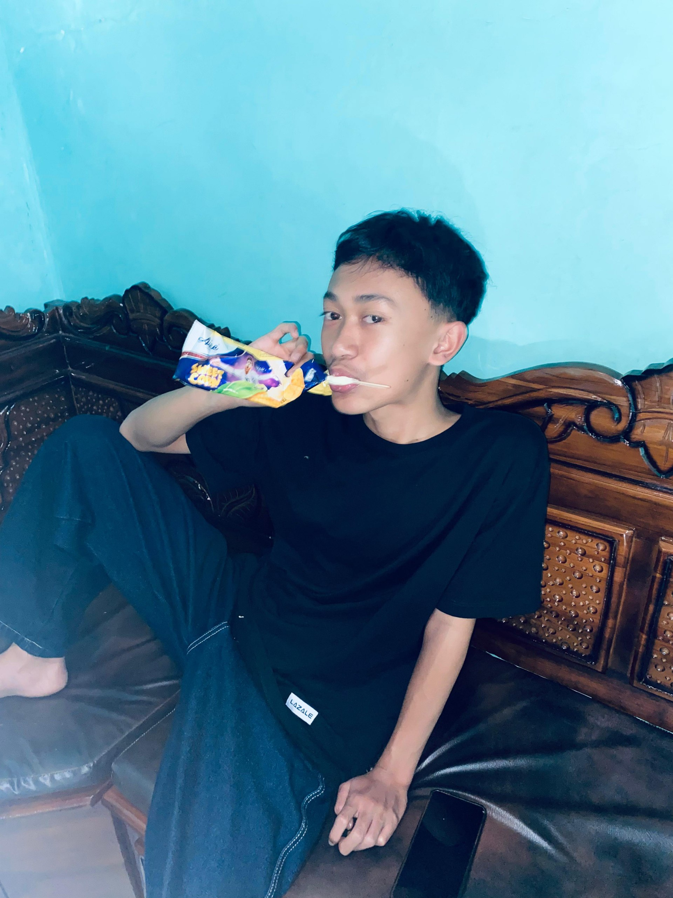

Ananda Yudhi P
Alamat: Peron, Sukorejo, Kendal
Lahir: Kendal
Tentang Saya
Halo! Nama saya Ananda Yudhi P. Saya adalah seorang web developer dan penggemar teknologi yang bersemangat. Saya memiliki minat besar dalam menciptakan solusi digital yang kreatif dan fungsional. Saya suka belajar hal-hal baru dan terus mengasah keterampilan saya di bidang pemrograman, desain, dan inovasi.
Dalam portofolio ini, Anda akan menemukan beberapa proyek dan karya yang telah saya kerjakan. Saya percaya bahwa setiap proyek adalah kesempatan untuk berkembang dan memberikan dampak positif.